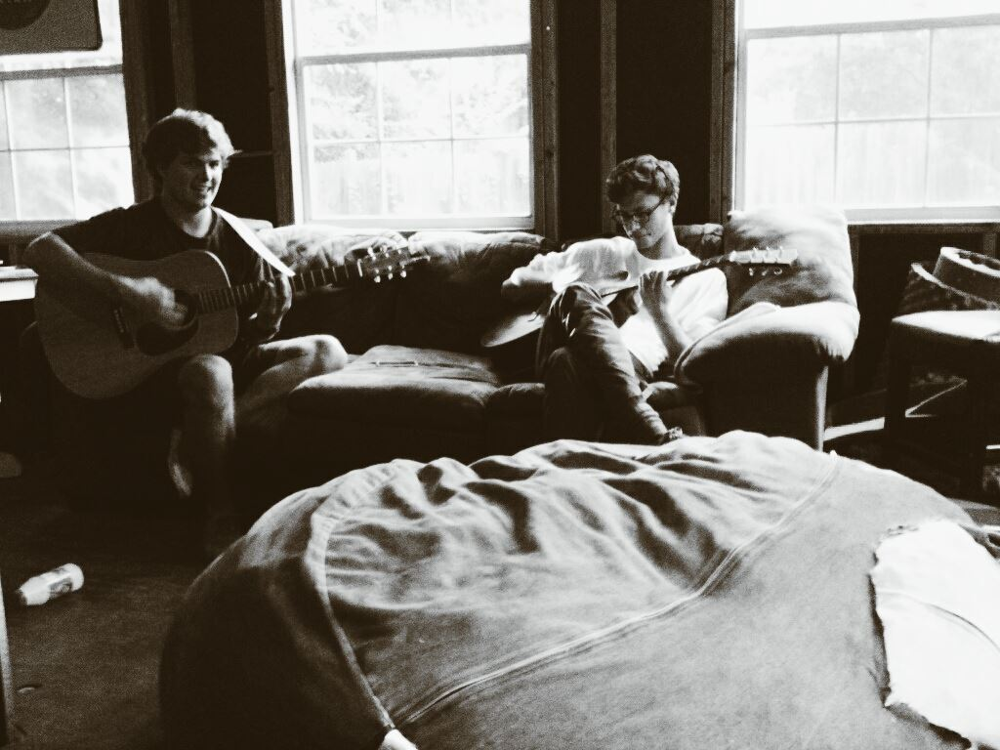

3.08 | Rhythian
Hey everyone,
We are extremely excited to announce that on March 29th we will be playing a show at Lambert's and we want to see all of your beautiful faces there. Get your tickets here. The talented Trevor Borden will be joining us for the evening and we've got a lot of good new tunes that we want you all to hear. Much love,
~ the fellows
3.02 | Jacob finds his trumpet
It's true. Our beloved cello player was digging through some boxes in his closet and amidst piles of engineering notes he discovered an old trumpet. He's not sure if he remembers how to play it but you can be sure to expect some sort of brass sound entering our live set, whether discordant or pleasant.
~ xxx
2.28 | Jams in the backhouse
Cold weather and new music in the works.
~ colin & cullen
